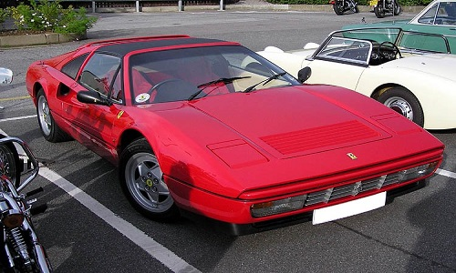
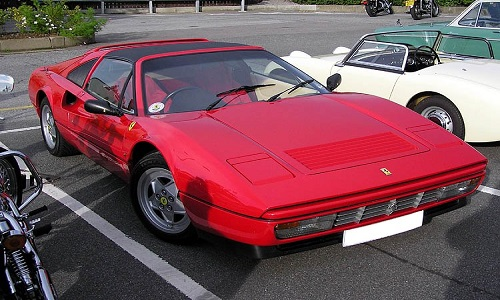

Ferrari Mondial — спортивний автомобіль з посадковою формулою 2+2, що виготовляся італійською компанією Ferrari з 1980 по 1993 рік. Вона прийшла на зміну кутастої 208/308 GT4. Назва "Mondial" походить від історії Феррарі - від назви знаменитого гоночного автомобіля початку 1950-х 500 Mondial. Незважаючи на те, що дизайн його попередника розляло ательє Bertone, дизайн Ferrari Mondial розробляла Pininfarina. Автомобіль являв собою середньомоторне купе або кабріолет з двигуном V8. Mondial був виготовлений в досить великих для Ferrari кількостях, всього за 13 рокув було виготовлено більш ніж 6800 екземплярів, що робить його одним із найбільш комерційно успішних моделей Ferrari.
На головну